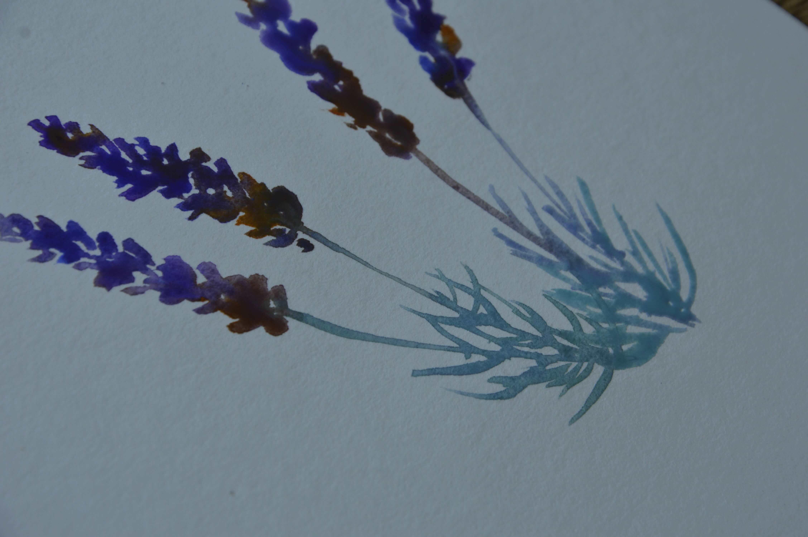
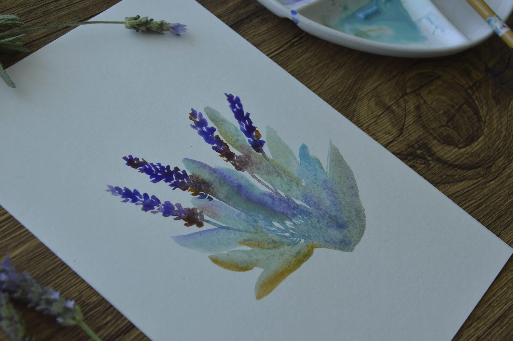
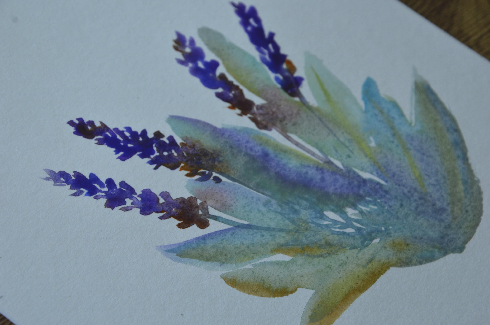
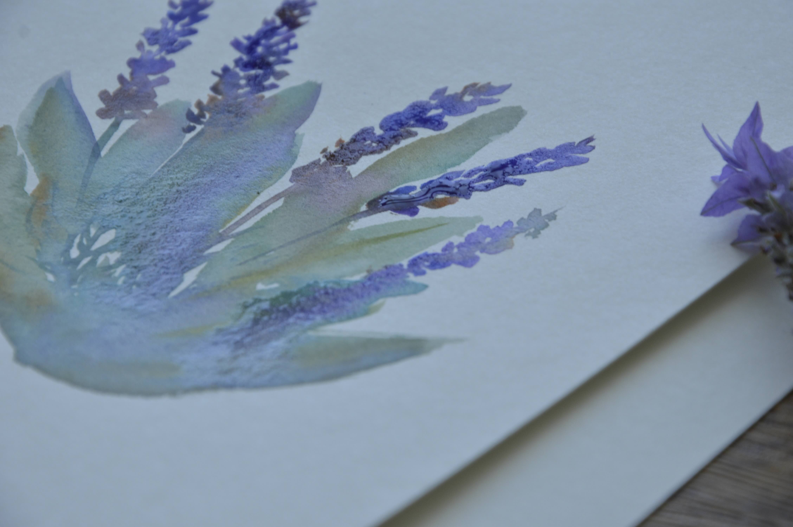
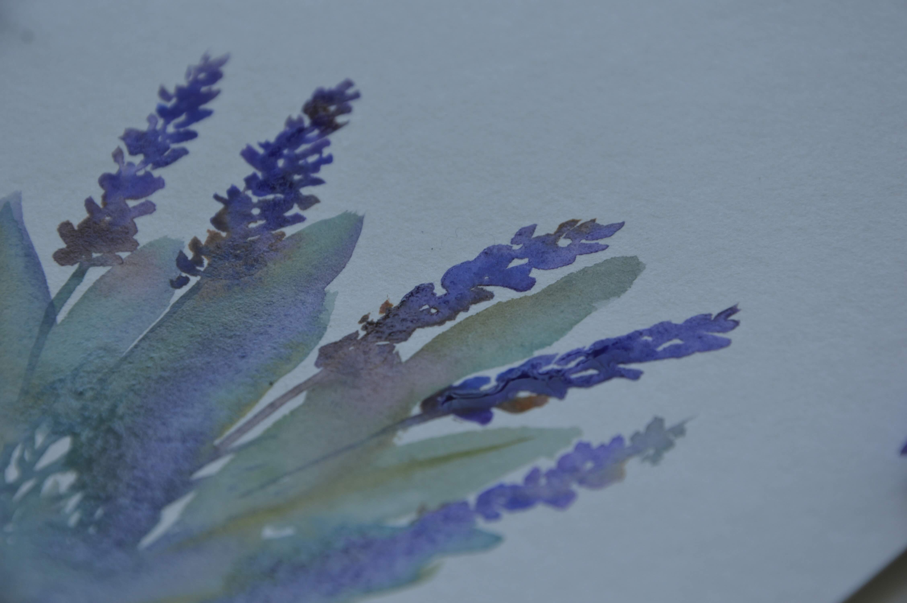
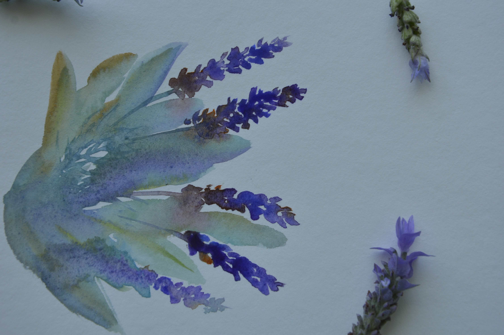
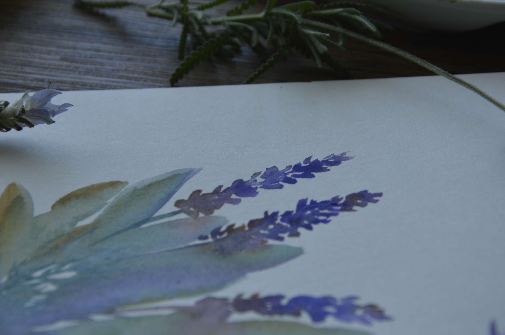

Mindful creativity
One Flower at a Time: Learning to Slow Down with Watercolour
Sometimes, we spend so much time thinking about where we're going that we forget to notice where we are.

Have you ever noticed how difficult it can be to truly pause?
Even when everything around us is quiet, our minds can be somewhere else.
Thinking about what needs to be done. What we haven't finished. What we should be doing next.
We move from one task to another, always looking ahead, hoping that once we've finished the next thing, we'll finally have a moment to breathe.
But then another thing appears on the list.
And somehow, the moment we've been waiting for never quite arrives.
Recently, while painting a small bouquet of lavender and eucalyptus, I found myself thinking about this familiar feeling.
I had started with something simple: a few delicate lavender flowers, some soft green leaves, and a blank sheet of watercolour paper.
But before my brush had even touched the page, my mind was already imagining the finished painting.
Would the flowers look beautiful? Would the colours work together? Would I be happy with the final result?

I wanted to know the ending before I had even begun.
And I wondered how often I do the same thing in life.
We want to see the whole picture
When we're working toward something important, it's natural to want reassurance that we're on the right path.
We want to know whether we're making the right decisions, whether our efforts will pay off, and whether we're moving toward the life we imagined.
We make plans. We set goals. We try to anticipate what might happen next.
Planning can be useful, of course. Having a direction gives us something to work toward.
But sometimes, our desire to know the outcome becomes so strong that we struggle to enjoy the process of getting there.

We measure today's progress against a future we haven't reached yet.
We worry that we're behind, that we're not doing enough, or that the small steps we're taking might not lead anywhere.
And in the middle of all that thinking, we can forget that we're already living the life we're trying so hard to build.
What if we could give ourselves a little more room to be where we are?
A bouquet doesn't bloom all at once
As I painted the lavender, I thought about how flowers grow.
A lavender flower doesn't rush to become the finished bloom. It develops gradually, one small part at a time.
It doesn't need to know exactly what the entire garden will look like before it begins to grow.
It simply grows under the conditions available to it, responding to the light, the water, and the changing seasons.
Painting a bouquet feels a little like that.
The first flower doesn't know what the whole composition will become. When I paint the second, I'm still discovering how the colours and shapes will work together.

As the leaves appear, the empty spaces begin to change. The bouquet slowly finds its balance.
Each brushstroke gives me something new to respond to.
I can have an idea of what I want to create, but I cannot completely control how the watercolour will behave. Sometimes the pigment spreads in an unexpected direction. Sometimes a colour is softer than I imagined. Sometimes a small detail works better when I leave it alone.
I have to look at what's happening now and decide what to do next.
And perhaps that's enough.
We don't always need certainty about the entire journey. Sometimes, we only need enough clarity to take the next small step.
The quiet beauty of eucalyptus
One of my favourite parts of this bouquet is adding the eucalyptus leaves.
They aren't the main attraction. They don't need to compete with the lavender flowers for attention.
Instead, they bring balance to the composition. Their soft green shapes create space around the blooms and allow the whole arrangement to breathe.

Without them, the bouquet would feel different.
It made me think about how we often approach our own lives.
We tend to celebrate what we add: another achievement, another goal, another responsibility, another thing we can point to as evidence that we're moving forward.
But we don't always notice the value of the space between those things.
The quiet morning before the day begins. A few minutes spent looking out of the window. Time to paint without needing to produce anything impressive. A walk where we notice the shape of a leaf or the changing colour of the sky.
These moments might not look significant from the outside.
They may not appear on a list of accomplishments.
But they can give us room to breathe, to reflect, and to reconnect with what matters to us.
Perhaps a meaningful life isn't only about what we manage to accomplish. Perhaps it's also about what we make room to experience along the way.
Slowing down doesn't mean falling behind
For a long time, it's easy to believe that slowing down means losing momentum.
If we're not constantly improving, achieving, or moving forward, we might feel that we're somehow falling behind.
I think this feeling can follow us even into the things we do for enjoyment.
We want to become better at painting. We want our work to improve. We compare our early attempts with someone else's beautiful finished artwork and wonder how long it will take us to get there.
Learning a skill does take practice. Progress matters when we're working toward something we care about.
But perhaps we don't have to turn every moment of practice into a test of how far we've progressed.

We can learn a new technique and enjoy discovering it. We can make a painting that doesn't turn out as expected and still appreciate the time we spent creating it.
We can want to improve without demanding that every brushstroke prove we're getting better.
Slowing down doesn't mean giving up on our goals.
It can mean paying more attention to the path we're taking toward them.
The calm was already here
As the bouquet gradually came together, I realised something.
The calm I was looking for wasn't waiting at the end of the painting.
It wasn't hidden in the finished result, waiting for me to put down my brush and decide whether I'd done a good job.
It was already here.
In watching the colour spread across the paper. In choosing where to place the next leaf. In pausing to see how the different shapes worked together.

For those moments, I didn't need to know exactly what the bouquet would become.
I only needed to notice what was happening in front of me.
Perhaps we can bring a little of that feeling into everyday life.
We can still make plans. We can still work toward the things we care about. We can still hope for something beautiful at the end.
But we can also let ourselves experience the small moments that make up the journey.
One conversation. One thoughtful decision. One quiet pause. One small step toward something that matters to us.
We don't have to wait until everything is finished to appreciate where we are.
One flower, one breath, one brushstroke
If life has felt busy lately, perhaps you could give yourself a small creative moment.
You don't need a perfect setup or an entire afternoon.
Take out a few watercolours and paint one simple flower. Watch how the pigment moves. Notice what happens when two colours meet. Let yourself experiment without needing every mark to turn out exactly as planned.
And if painting isn't your thing, perhaps take a few minutes to sit quietly with a cup of tea, step outside, or notice something beautiful on your next walk.

The point isn't to add another task to your day.
It's to give yourself a little space to experience the day you're already living.
You don't have to have everything figured out today.
You don't have to see the whole picture before you begin.
Sometimes, the next small step is enough.
One breath. One flower. One brushstroke at a time.
Let's create a little space together
If you'd like to explore watercolour in a gentle, beginner-friendly way, I'd love to invite you to join my free 5-Day Watercolor Bloom.
We'll paint one simple flower each day, taking small steps and making room for creativity without the pressure to be perfect.
Join the free 5-Day Watercolor Bloom →
And if you'd like to watch this lavender and eucalyptus bouquet come to life, you can watch the original painting video on YouTube.
A little question for you: When was the last time you allowed yourself to slow down and enjoy something without worrying about the result?
I'd love to hear about the small moments that help you find a little breathing space.
With warmth,
Lucy | ZenBeautifulArt
← Back to the blog